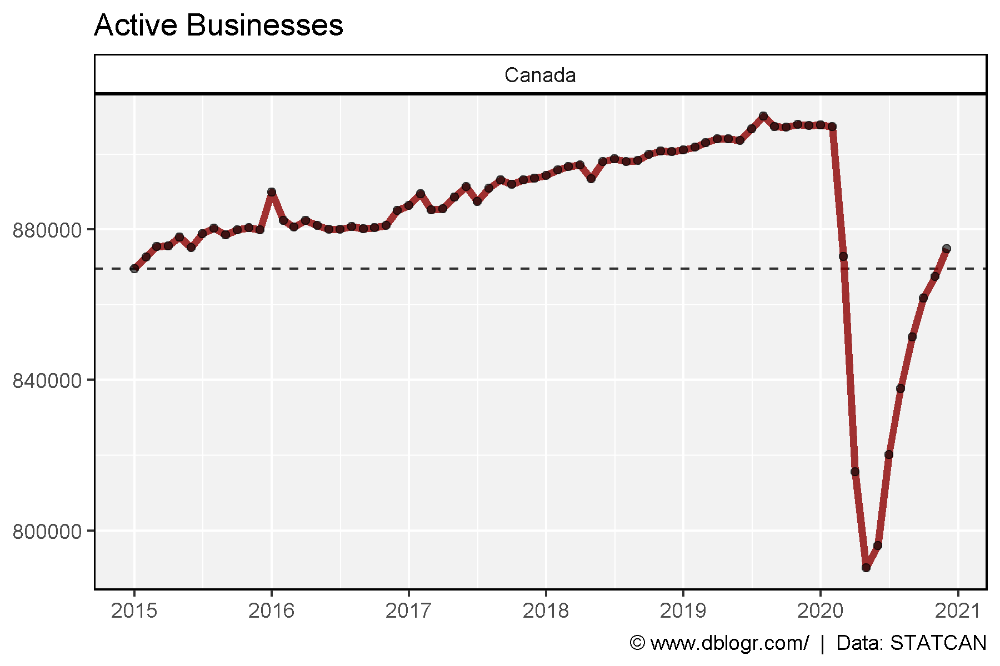
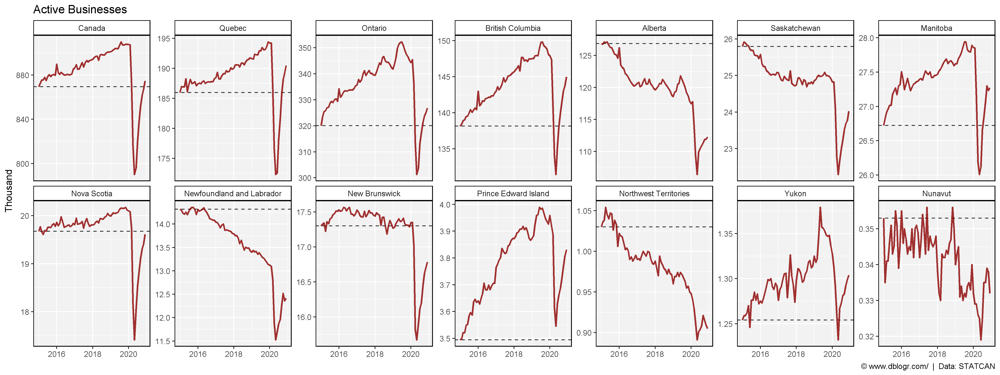
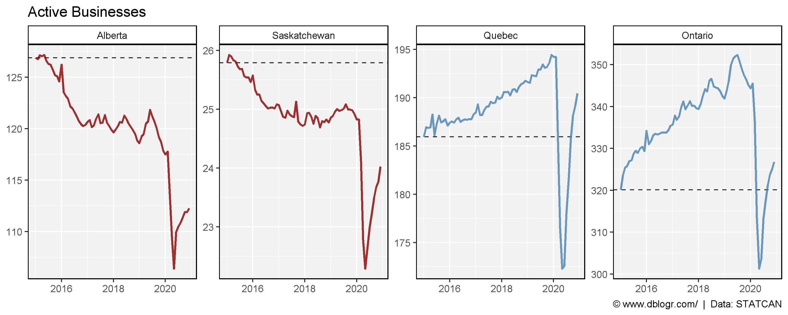
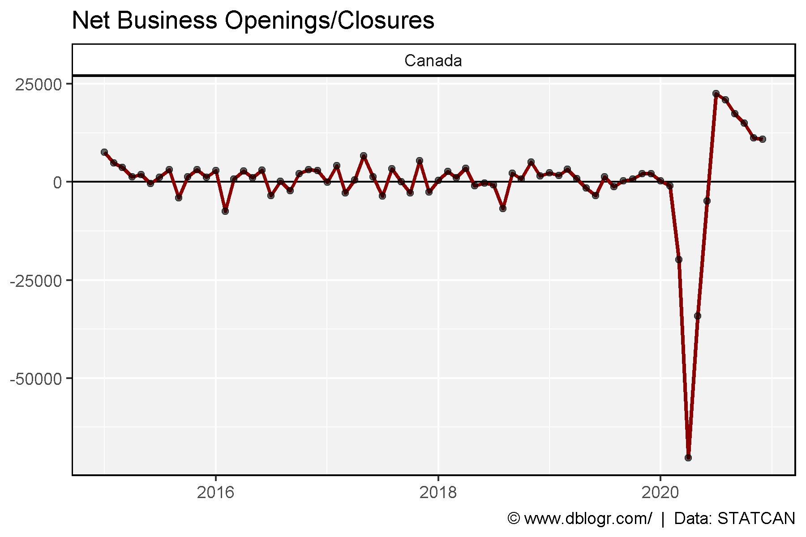
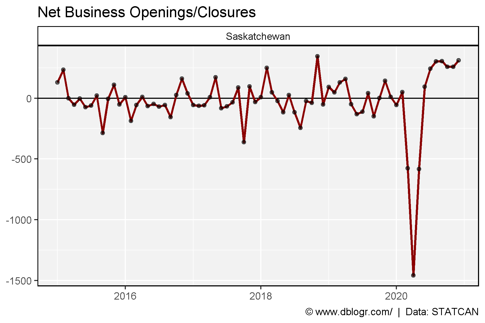
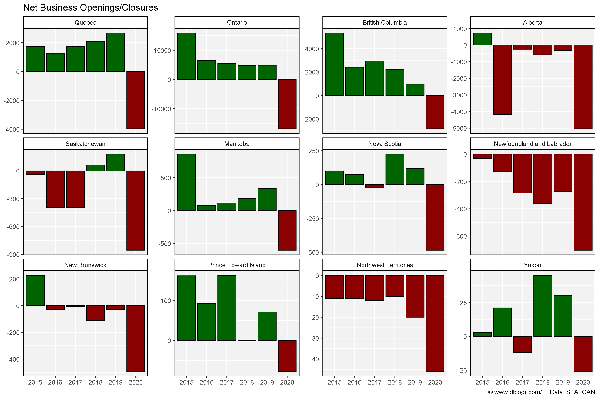
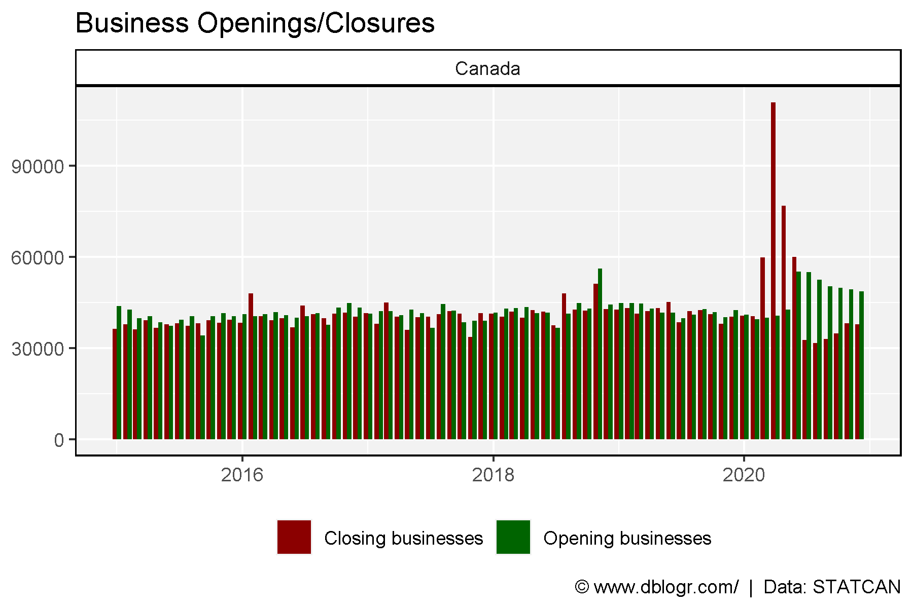
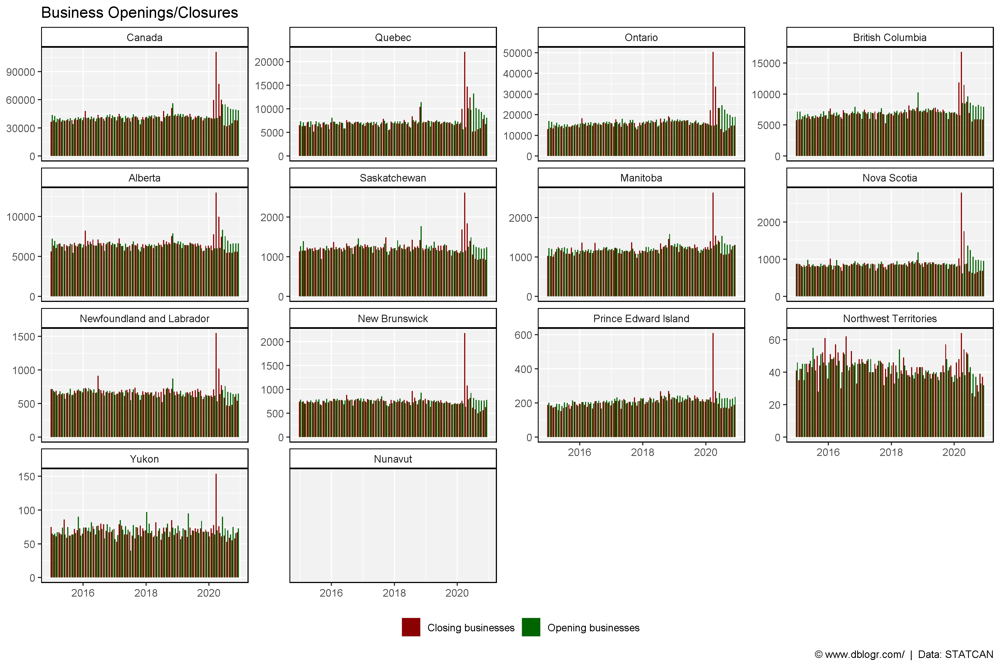

Prepare Data
# devtools::install_github("derekmichaelwright/agData")
library(agData) # Loads: tidyverse, ggpubr, ggbeeswarm, ggrepel
# Prep data
areas <- c("Canada", "Quebec", "Ontario", "British Columbia",
"Alberta", "Saskatchewan", "Manitoba", "Nova Scotia",
"Newfoundland and Labrador", "New Brunswick", "Prince Edward Island",
"Northwest Territories", "Yukon", "Nunavut")
a_ord <- c(1,6,7,11, 10,9,8,4, 2,5,3, 13,12,14) # unique(dd$GEO)
dd <- read.csv("3310027001_databaseLoadingData.csv") %>%
select(Area=GEO, Date=1, Measurement=Business.dynamics.measure, Value=VALUE) %>%
filter(!is.na(Value)) %>%
mutate(Area = plyr::mapvalues(Area, unique(.$Area)[a_ord], areas),
Area = factor(Area, levels = areas),
Date = as.Date(paste0(Date, "-01"), format = "%Y-%m-%d")) %>%
spread(Measurement, Value) %>%
mutate(Difference = `Opening businesses` - `Closing businesses`)
Active Businesses
# Prep data
xx <- dd %>% filter(Area == "Canada")
x1 <- xx %>% filter(Date == min(Date)) %>% pull(`Active businesses`)
# Plot
mp <- ggplot(xx, aes(x = Date, y = `Active businesses`)) +
geom_hline(yintercept = x1, lty = 2, alpha = 0.8) +
geom_line(color = "darkred", size = 1.5, alpha = 0.8) +
geom_point(alpha = 0.6) +
facet_grid(. ~ Area) +
scale_fill_manual(name = NULL, values = c("darkred", "darkgreen")) +
scale_x_date(date_breaks = "1 year", date_labels = "%Y") +
theme_agData(legend.position = "bottom") +
labs(title = "Active Businesses", y = NULL, x = NULL,
caption = "\xa9 www.dblogr.com/ | Data: STATCAN")
ggsave("canada_businesses_01.png", mp, width = 6, height = 4)

# Prep data
x1 <- dd %>% filter(Date == min(Date))
# Plot
mp <- ggplot(dd, aes(x = Date, y = `Active businesses`/ 1000)) +
geom_hline(data = x1, aes(yintercept = `Active businesses` / 1000), lty = 2, alpha = 0.8) +
geom_line(color = "darkred", size = 1, alpha = 0.8) +
facet_wrap(. ~ Area, scales = "free_y", ncol = 7) +
scale_fill_manual(name = NULL, values = c("darkred", "darkgreen")) +
theme_agData(legend.position = "bottom") +
labs(title = "Active Businesses", y = "Thousand", x = NULL,
caption = "\xa9 www.dblogr.com/ | Data: STATCAN")
ggsave("canada_businesses_02.png", mp, width = 16, height = 6)

# Prep data
areas <- c("Alberta", "Saskatchewan", "Quebec", "Ontario")
colors <- c("darkred", "darkred", "steelblue","steelblue")
xx <- dd %>% filter(Area %in% areas) %>%
mutate(Area = factor(Area, levels = areas))
x1 <- xx %>% filter(Date == min(Date))
# Plot
mp <- ggplot(xx, aes(x = Date, y = `Active businesses` / 1000)) +
geom_hline(data = x1, aes(yintercept = `Active businesses` / 1000), lty = 2, alpha = 0.8) +
geom_line(aes(color = Area), size = 1, alpha = 0.8) +
facet_wrap(. ~ Area, scales = "free_y", ncol = 7) +
scale_color_manual(name = NULL, values = colors) +
theme_agData(legend.position = "none") +
labs(title = "Active Businesses", y = NULL, x = NULL,
caption = "\xa9 www.dblogr.com/ | Data: STATCAN")
ggsave("canada_businesses_03.png", mp, width = 10, height = 4)

Business Closures
sum(dd %>% filter(Area == "Canada", Date > "2020-01-01") %>% pull(Difference))
## [1] -32154
# Prep data
xx <- dd %>% filter(Area == "Canada")
# Plot
mp <- ggplot(xx, aes(x = Date, y = Difference)) +
geom_hline(yintercept = 0) +
geom_line(size = 1, color = "darkred") +
geom_point(alpha = 0.6) +
facet_grid(. ~ Area) +
theme_agData(legend.position = "bottom") +
labs(title = "Net Business Openings/Closures", y = NULL, x = NULL,
caption = "\xa9 www.dblogr.com/ | Data: STATCAN")
ggsave("canada_businesses_04.png", mp, width = 6, height = 4)

# Prep data
xx <- dd %>% filter(Area == "Saskatchewan")
# Plot
mp <- ggplot(xx, aes(x = Date, y = Difference)) +
geom_hline(yintercept = 0) +
geom_line(size = 1, color = "darkred") +
geom_point(alpha = 0.6) +
facet_grid(. ~ Area) +
theme_agData(legend.position = "bottom") +
labs(title = "Net Business Openings/Closures", y = NULL, x = NULL,
caption = "\xa9 www.dblogr.com/ | Data: STATCAN")
ggsave("canada_businesses_05.png", mp, width = 6, height = 4)

# Prep data
xx <- dd %>%
separate(Date, c("Year","Month","Day")) %>%
group_by(Area, Year) %>%
summarise(Businesses = sum(Difference)) %>%
ungroup() %>%
mutate(Pos = ifelse(Businesses > 0, "Yes", "No"))
xc <- xx %>% filter(Area == "Canada")
# Plot
mp <- ggplot(xc, aes(x = Year, y = Businesses, fill = Pos)) +
geom_bar(stat = "identity", color = "black") +
facet_grid(. ~ Area) +
scale_fill_manual(values = c("darkred","darkgreen")) +
theme_agData(legend.position = "none") +
labs(title = "Net Business Openings/Closures", y = NULL, x = NULL,
caption = "\xa9 www.dblogr.com/ | Data: STATCAN")
ggsave("canada_businesses_06.png", mp, width = 6, height = 4)

# Prep data
xx <- xx %>% filter(!Area %in% c("Canada", "Nunavut"))
# Plot
mp <- ggplot(xx, aes(x = Year, y = Businesses, fill = Pos)) +
geom_bar(stat = "identity", color = "black") +
facet_wrap(Area ~ ., scales = "free_y", ncol = ) +
scale_fill_manual(values = c("darkred","darkgreen")) +
theme_agData(legend.position = "none") +
labs(title = "Net Business Openings/Closures", y = NULL, x = NULL,
caption = "\xa9 www.dblogr.com/ | Data: STATCAN")
ggsave("canada_businesses_07.png", mp, width = 12, height = 8)

Openings Vs Closings
# Prep data
xx <- dd %>%
select(Area, Date, `Opening businesses`, `Closing businesses`) %>%
gather(Measurement, Value, `Opening businesses`, `Closing businesses`)
x1 <- xx %>% filter(Area == "Canada")
# Plot
mp <- ggplot(x1, aes(x = Date, y = Value, fill = Measurement)) +
geom_bar(stat = "identity", position = "dodge") +
scale_fill_manual(name = NULL, values = c("darkred", "darkgreen")) +
facet_grid(. ~ Area) +
theme_agData(legend.position = "bottom") +
labs(title = "Business Openings/Closures", y = NULL, x = NULL,
caption = "\xa9 www.dblogr.com/ | Data: STATCAN")
ggsave("canada_businesses_08.png", mp, width = 6, height = 4)

# Plot
mp <- ggplot(xx, aes(x = Date, y = Value, fill = Measurement)) +
geom_bar(stat = "identity", position = "dodge") +
facet_wrap(Area ~ ., scales = "free_y") +
scale_fill_manual(name = NULL, values = c("darkred", "darkgreen")) +
theme_agData(legend.position = "bottom") +
labs(title = "Business Openings/Closures", y = NULL, x = NULL,
caption = "\xa9 www.dblogr.com/ | Data: STATCAN")
ggsave("canada_businesses_09.png", mp, width = 12, height = 8)

© Derek Michael Wright www.dblogr.com/